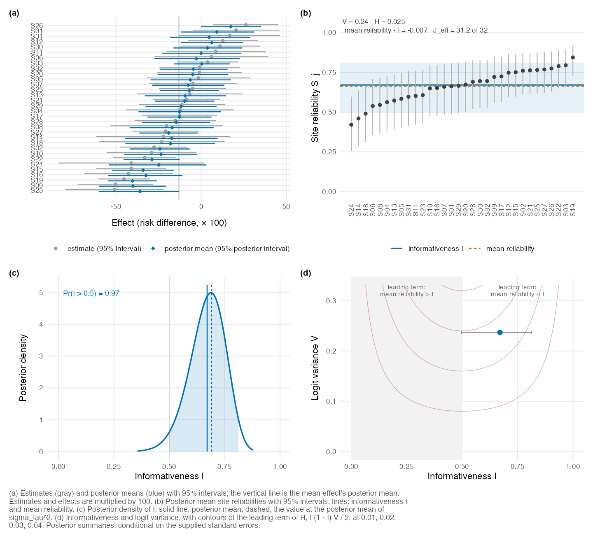

A multisite trial, a meta-analysis or a small area estimation problem gives an estimate and a standard error for each site. A hierarchical model shrinks each estimate toward the overall mean, and the weight that a site’s posterior mean keeps on its own estimate is the site’s reliability. poolinfo summarizes the reliabilities of all the sites at once: their informativeness (the reliability at the geometric mean of the sampling variances), their mean, their dispersion, and a count of how the total reliability is shared among the sites. It computes the posterior distribution of each from the estimates and their standard errors, and it plots them. The summaries are worth checking before you rank sites, report site effects or study how an effect varies across sites, because they measure how much of each site’s own estimate survives the pooling. The diagnostics are those of Lee (2026).
Installation
You can install poolinfo from GitHub with:
# install.packages("remotes")
remotes::install_github("joonho112/poolinfo", build_vignettes = TRUE)The vignettes are also on the package website.
Example
The data set ocrs has the estimated effects of an online credit recovery course on course passing in the 32 school-by-subject sites of the Online Credit Recovery Study (Rickles et al., 2024), with their standard errors. reliability_posterior() computes the posterior distribution of the diagnostics by numerical integration over the between-site standard deviation, with a flat prior on it and on the mean.
library(poolinfo)
fit <- reliability_posterior(estimate, se = se, site = site, data = ocrs,
scale_label = "risk difference")
fit
#> Reliability profile of 32 sites (posterior)
#> Model: estimate ~ N(effect, se^2), effect ~ N(mean, sigma_tau^2),
#> sites independent
#> Prior: flat on the mean and on sigma_tau
#> Scale of the effects: risk difference
#> Summaries are conditional on the supplied standard errors.
#> Each site counts equally in the diagnostics, whatever its size.
#>
#> mean 95% interval
#> informativeness I 0.671 0.497 0.812
#> mean reliability 0.663 0.498 0.801
#> dispersion H 0.0253 0.0185 0.0289
#> concentration count J_eff 31.2 30.3 31.7 of 32
#> logit variance V 0.237 (fixed by the standard errors)
#> sigma_tau 0.188 0.127 0.266
#> effect mean -0.130 -0.211 -0.0498
#>
#> Pr(I > 0.5) 0.973
#> I at E(sigma_tau^2) 0.691The informativeness is 0.67, with a 95% posterior interval from 0.50 to 0.81, so a site whose sampling variance is the geometric mean of the 32 keeps about 67% of its own estimate in its posterior mean. The mean reliability, 0.66, is close to it, the dispersion is H = 0.025, and the concentration count is 31.2 of 32, so the total reliability is shared almost evenly among the sites. Every summary is conditional on the standard errors, which the model treats as known.
plot() shows the site estimates and their posterior means, the sorted reliabilities, the posterior density of the informativeness and the plane of the informativeness and the logit variance.
plot(fit, scale = 100)
What else is in the package
- Diagnostics of a profile at a fixed between-site standard deviation:
reliability_profile(),kl_centroid(),kl_dispersion(),concentration_count()and related functions. - Diagnostics from fits of other packages:
reliability_draws()for posterior draws (from brms, for example), and methods for metafor, ebnm and multisiteDGP objects;map_tau2_interval()maps a confidence interval for the between-site variance. - Planning:
reliability_design(),balanced_allocation()andsolve_design()give the profile of a planned trial and allocations of a total or a budget to the sites. - Comparing and reporting:
compare_profiles(),prior_sensitivity(),report_table()andreport_text().
vignette("poolinfo") walks through the example above in full.